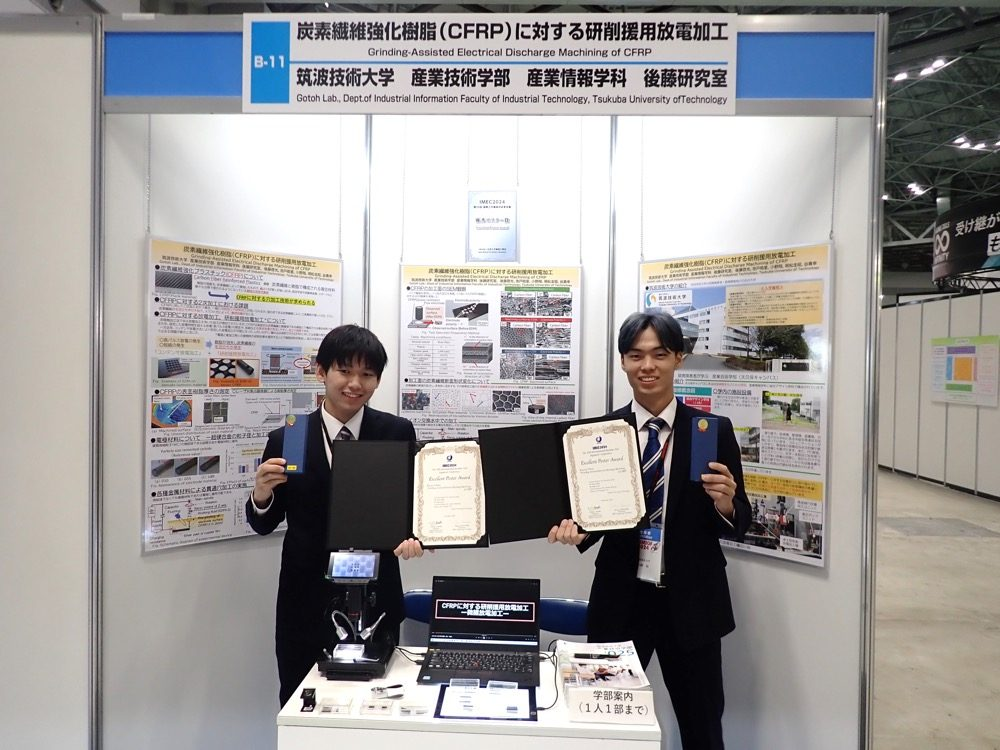

取り組みの概要
学生による学会発表をきっかけに共同研究がスタートしました。炭素繊維強化樹脂（CFRP）は、高強度かつ軽量な素材であり、次世代の構造部材として注目されていますが、高品位な穴加工が困難であるという課題があります。そこで、研削効果を援用した放電加工法により、高品位な穴加工が可能であることを示しましたが、加工穴が深くなるにつれて加工の進展が困難になるという課題を抱えていました。
共同研究先である株式会社アステックは、細穴放電加工を専門とするメーカーであり、課題解決につながる技術を有しています。そこで、より深い穴加工を実現するための専用加工装置の開発に取り組みました。装置開発では学生も企業との打ち合わせに参加し、企業技術者との議論を通じて実践的な開発経験を積みながら研究活動に取り組みました。開発した装置を用いた研究成果をIMEC2024（国際工作機械技術者会議）にて発表し、優秀ポスター賞を受賞しました。
- 連携先
- 株式会社アステック
- 期間
- 2024年2月〜
- 関わった学生の領域
- 機械系
- 主体教員
- 産業技術学部：後藤啓光
- 学生の関わり方
- 研究活動（大学院1年生）
学生の学びと関わり
学生に求められた専門性
加工現象や材料特性に関する専門知識、機械設計・CADに関する知識と活用能力、実験装置の構築・運用能力、データ解析・考察能力。
連携先にとっての価値
新規加工技術へのアクセス、将来の製品・事業化への布石。
成果
- IMEC2024（国際工作機械技術者会議）優秀ポスター賞 受賞
連携先担当者の評価
※ コメントは掲載準備中です。株式会社アステック ご担当者